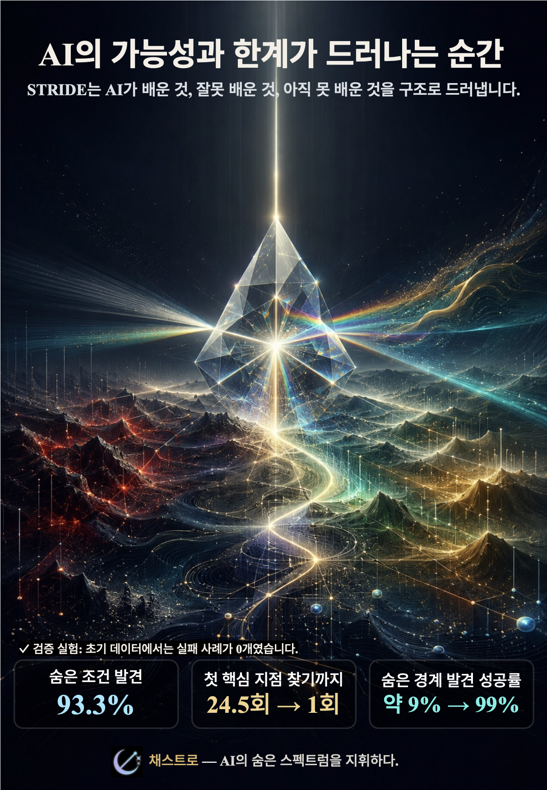

AI가 배운 세계의
숨은 구조를
해석합니다.
기업이 AI를 도입한 뒤 원하는 것은 결국 두 가지입니다. 안전하게 운영할 수 있다는 근거, 그리고 AI를 목표 기준에 더 가깝게 개선하는 방향. 채스트로는 STRIDE로 AI의 가능성과 한계를 함께 진단합니다.

고객이 원하는 것은
두 가지입니다.
설명 가능성 자체가 목적은 아닙니다. 기업은 AI를 믿고 운영할 수 있는 근거와, AI를 더 잘하게 만드는 구체적인 개선 방향을 원합니다.
안전한 운영 근거
AI가 어떤 조건에서 정책·규정·고객 기준을 벗어날 수 있는지 사전에 확인해야 합니다. 사고가 난 뒤의 설명보다, 사고 전의 구조적 진단이 더 중요합니다.
목표 기준으로의 개선
기업이 원하는 AI는 단지 “틀리지 않는 AI”가 아닙니다. 더 정확하고, 더 일관되며, 더 바람직한 목표 함수에 가까워지는 AI입니다.
AI가 배운 것,
다르게 배운 것,
아직 못 배운 것.
STRIDE는 AI의 현재 행동을 사람이 검토 가능한 구조로 번역합니다. 그 결과 안전의 경계와 성능 개선의 길을 같은 지도 위에서 볼 수 있습니다.
STRIDE는 보이지 않던
경계를 찾습니다.
초기 데이터에 명확한 실패 사례가 없어도, AI의 행동에는 흔들림과 잔차가 남습니다. STRIDE는 그 신호를 구조로 펼쳐, 아직 드러나지 않은 조건과 경계를 찾아갑니다.
명확한 기준 이탈
각 후보 입력이 AI의 정책·가드레일·고객 기준을 벗어났는지를 나타내는 결과입니다. 이미 사고가 난 뒤의 설명이 아니라, 어떤 조건에서 기준 이탈이 발생하는지 확인하는 출발점입니다.
초기 신호
기준 이탈이 명확히 발생하기 전에도 AI의 행동에는 흔들림과 near-miss 신호가 남습니다. STRIDE는 이 연속적인 가능성 신호를 읽어, 숨은 경계로 가까워지는 방향을 보여줍니다.
Projection
AI 행동을 사람이 검토 가능한 구조공간으로 옮겨 봅니다.
Decomposition
잘 배운 구조, 다르게 배운 구조, 아직 못 배운 구조를 나누어 봅니다.
Prescription
위험을 줄이고 목표 기준에 가까워지는 다음 개선 방향을 제안합니다.
AI는 도입보다
운영이 어렵습니다.
기업의 AI는 한 번 출시되면 고객, 규정, 내부 정책, 성능 목표 사이에서 계속 판단합니다. 문제는 그 판단이 언제, 왜, 어떻게 달라지는지 잘 보이지 않는다는 점입니다.
보이지 않는 기준 이탈
AI가 내부 정책이나 고객 기준과 다른 방향으로 답해도, 사고 전에는 그 조건을 파악하기 어렵습니다.
성능 개선의 병목
정확도를 높이고 싶어도, 무엇을 유지하고 무엇을 줄이고 무엇을 보완해야 하는지 알기 어렵습니다.
설명에서 멈추는 리포트
“왜 답했는가”만으로는 부족합니다. 기업은 “어떻게 더 나아질 것인가”까지 필요로 합니다.
STRIDE는 AI의
배움 상태를 진단합니다.
STRIDE는 단순 XAI가 아니라, AI가 목표 기준에 가까워지기 위해 무엇을 더 배워야 하는지 보여주는 진단·처방 프레임워크입니다.
배운 것
목표 기준과 닮은 구조입니다. 유지하거나 강화해야 하는 AI의 좋은 신호입니다.
다르게 배운 것
목표와 다르게 작동하는 구조입니다. 안전·일관성·성능을 위해 줄여야 할 신호입니다.
아직 못 배운 것
모델이 놓친 missing structure입니다. 성능 개선과 새로운 가능성의 출발점입니다.
STRIDE
Bridge Report
2~4주 단위 AI 행동 진단 리포트. 완성된 SaaS를 기다리지 않고, 고객 AI의 안전 근거와 개선 방향을 먼저 확인합니다.
파일럿 상담 예약고객이 받는 것
AI가 어떤 조건에서 기준을 벗어날 수 있는지에 대한 진단 근거
기업이 원하는 기준과 현재 AI 행동 사이의 Gap 지도
배운 것, 다르게 배운 것, 아직 못 배운 것의 구조적 분해
어떤 조건을 줄이고, 어떤 구조를 보완해야 하는지에 대한 처방
내부 보고, PoC 의사결정, 규제 대응 논의에 쓸 수 있는 요약 리포트
이런 팀에게
가장 먼저 필요합니다.
이미 AI를 운영하고 있고, 안전한 운영 근거와 성능 개선 방향을 함께 설명해야 하는 팀을 먼저 만납니다.
LLM/Agent 운영 기업
고객 응대, 업무 자동화, 내부 도구에서 AI 행동을 검증해야 하는 팀
금융·보험·핀테크
심사, 추천, 리스크, 고객 대응 모델의 기준 정합성을 확인해야 하는 팀
AI Governance
내부 정책, 리스크 관리, 설명 가능성, 감사 대응 체계를 만드는 조직
High-risk AI
의료, 보안, 법률, 공공 등 안전성과 신뢰가 중요한 AI 운영 조직
고채윤
Founder & CEO
경제학은 선택과 인센티브를, 철학은 판단의 기준을, 수학은 그것을 증명 가능한 구조로 보는 훈련이었습니다. 저는 보이지 않는 판단을 사람이 이해할 수 있는 형태로 번역하는 문제에 매달려왔고, 수학과 석사 과정에서 STRIDE를 고안했습니다. 이제 이 기술을 AI 행동 진단과 개선 리포트로 제품화하고 있습니다.
채스트로는
AI의 숨은 스펙트럼을 지휘합니다.
마에스트로가 악보의 구조를 읽어 아름다운 음악을 들려주듯,
채스트로는 AI의 숨겨진 판단 구조를 읽어 안전한 운영 근거와 더 나은 개선 방향을 안내합니다.
귀사의 AI가 더 안전하고 더 뛰어나게 도약하는 길을 함께 찾겠습니다.